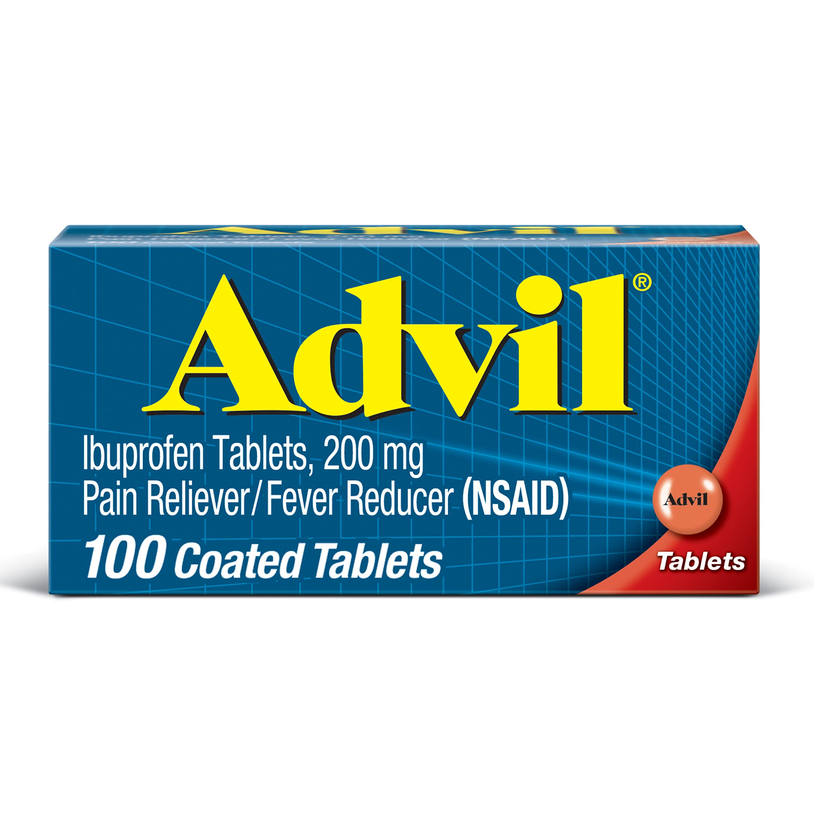

Basic Medications and their Usage
Advil
*** The following text is from the article "Advil Uses, Dosage & Side Effects" or can be found on Drugs.com ***
What is Advil?
Advil is a nonsteroidal anti-inflammatory drug (NSAID). Ibuprofen works by reducing hormones that cause inflammation and pain in the body. Advil is used to reduce fever and treat pain or inflammation caused by many conditions such as headache, toothache, back pain, arthritis, or minor injury. Advil is used in adults and children who are at least 2 years old. For children under 2 years check with a doctor.
Warnings
Do not take more than your recommended dose. An ibuprofen overdose can damage your stomach or intestines. Use only the smallest amount of medication needed to get relief from your pain, swelling, or fever.
Before taking this medicine
Advil can increase your risk of fatal heart attack or stroke, even if you don't have any risk factors. Do not use this medicine just before or after heart bypass surgery (coronary artery bypass graft, or CABG). Advil may also cause stomach or intestinal bleeding, which can be fatal. These conditions can occur without warning while you are using this medicine, especially in older adults. You should not use Advil if you are allergic to ibuprofen, or if you have ever had an asthma attack or severe allergic reaction after taking aspirin or an NSAID. Ask a doctor or pharmacist if this medicine is safe to use if you have ever had: heart disease, high blood pressure, high cholesterol, diabetes, or if you smoke; a heart attack, stroke, or blood clot; stomach ulcers or bleeding; liver or kidney disease; asthma; or if you take aspirin to prevent heart attack or stroke.

Ibuprofen Tablets 200 mg (Pain Reliever/ Fever Reducer) (100 coated Tablets)
Liqui-Gels (Solubilized Ibuprofen Capsules, 200 mg) Pain Reliever/Pain Reducer